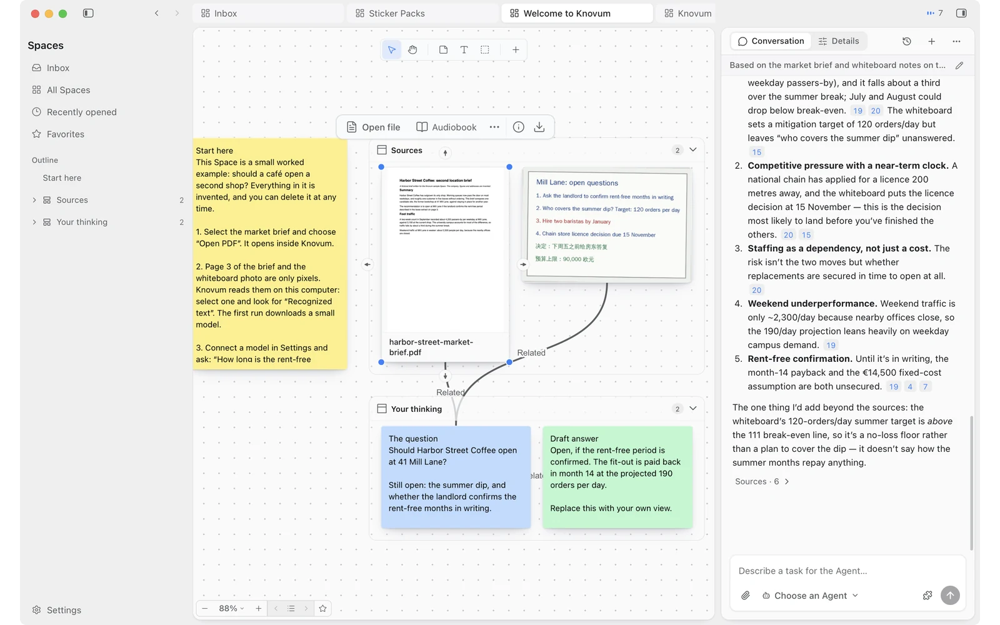

本地优先的知识工作空间
让知识汇聚
让思路清晰。
为你收集的资料、建立的联系，以及由此生长的作品，提供一个有条理的空间。所有内容都在你的设备上。
✳免费开源
⌂无需注册账号
◉资料库保存在本地
KNOVUM 工作空间01 / 05
让知识在一个空间里持续生长。真实产品 · 当前界面
K / 01
在上下文中思考
让来源清晰可循
让数据留在身边
有意识地创造
01更好的思考空间
你的工作，不只是文件的集合。
一个真正有用的想法，很少一次成形。它散落在文章、笔记、对话、录音和未完成的思绪里。Knovum
为它们建立共同的上下文，让下一条联系更容易浮现。
认识你的工作空间↗
01 / SPACE⌘
一张为思考留出空间的画布。
把多种媒体放进同一个可视空间。自由排列、整理相关资料，并用证据连接想法。
探索 Spaces↗
02 / UNDERSTAND“
每个答案，都交代依据。
围绕自己的资料提问，并通过引用回到准确段落、PDF 页码或录音时间点。
了解引用溯源↗
03 / CREATE✳
保留上下文，创造新的成果。
从选中的知识创建文档与媒体，并保留背后的来源和版本记录。
了解内容创作↗
04 / LOCAL-FIRST⌂
你的知识，始终由你掌握。
你的资料库存储在本地设备。可用的本地能力尽可能在设备上运行；是否让任务使用云端服务商，由你选择。
了解隐私机制↗
02自然的工作方式
从分散资料，到有据可依的成果。
为研究、学习与创作建立一种自然节奏。
01
先收集，不必急着整理。
保存链接、添加文件、记录想法或导入录音。所有内容都有可以暂存的地方。
02
把有关联的内容放在一起。
用分区、分组，以及想法与证据之间的语义关系，逐步搭建自己的 Space。
03
深入探索，再回到来源核对。
按关键词或语义搜索、提出问题，并检查答案所依据的原始内容。
04
保留上下文，继续创造。
将选中资料变成文档或媒体成果，同时保留通往来源的线索。

知识的循环01 — 04
03以信任为基础
你的知识，属于你自己。
你的资料库。
你的设备。
Knovum 无需注册账号，也不运行 Knovum 云服务。你的
Spaces、文件、提取文本、搜索索引和备份都保存在本地应用数据中。
了解隐私如何实现↗
⌂
本地优先的设计
知识资料库与搜索索引都保存在你的设备上。
◉
无需模型账号也能使用
编辑、整理、本地搜索、转录、OCR 等受支持的本地功能，不需要云端 AI 账号。
↗
云端使用保持明确
当你选择云端模型时，只有该任务所需的上下文会发送给你选定的服务商。
04为下一步，留出空间
给思考多一点空间。
让知识汇聚，让想法发生。
免费、开源，为桌面工作而生。